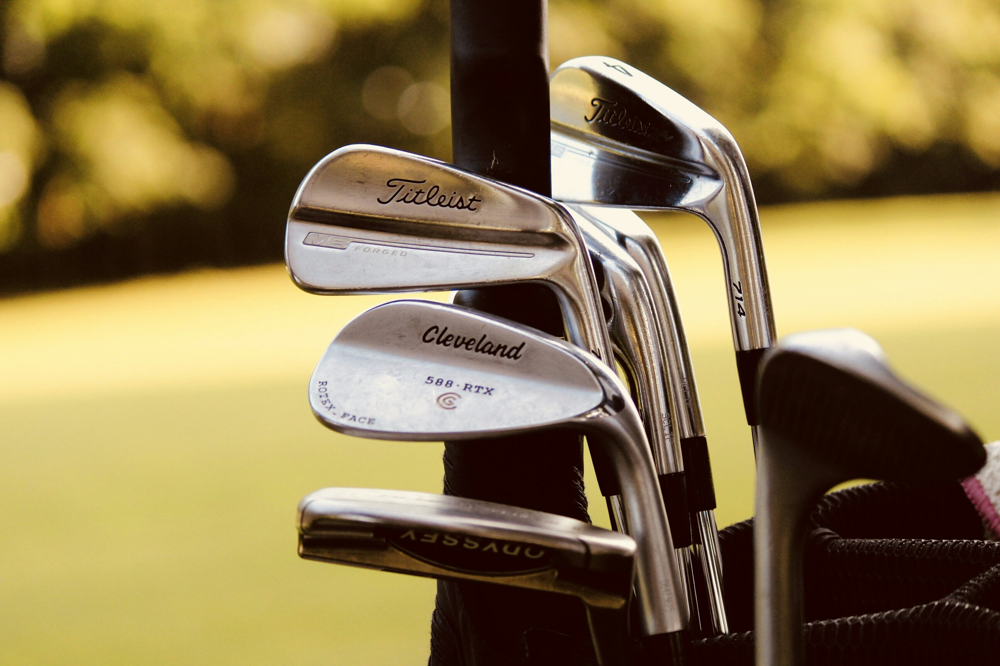
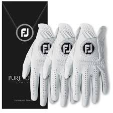

Reglas Básicas del Golf
El golf es un deporte de precisión en el que los jugadores golpean una pelota con diferentes tipos de palos para llevarla hasta el hoyo en el menor número de golpes posible.
- Un campo de golf estándar tiene 18 hoyos.
- Se juega en turnos siguiendo el orden de los jugadores.
- Existen reglas específicas sobre penalizaciones si la bola cae en obstáculos como el agua o los bunkers.
- El puntaje más bajo gana (menos golpes realizados).
Equipamiento Esencial

Palos de Golf
Existen diferentes tipos de palos, como maderas, hierros y putters, diseñados para distintos golpes.

Pelotas de Golf
Las pelotas de golf tienen diseños específicos para lograr mejor aerodinámica y control.

Guantes y Accesorios
Los guantes mejoran el agarre del palo, y otros accesorios incluyen tees, bolsas y ropa adecuada.
Modalidades de Juego
El golf se puede jugar de diferentes maneras, dependiendo de la competición o del estilo de juego elegido.
| Modalidad | Descripción |
|---|---|
| Stroke Play | El jugador con el menor número total de golpes al final del recorrido gana. |
| Match Play | Se juega hoyo por hoyo, ganando quien obtiene mejor puntaje en más hoyos. |
| Stableford | Se otorgan puntos en función de los golpes realizados en cada hoyo en comparación con el par del campo. |
¿Listo para comenzar en el golf?
Explora nuestra galería y descubre los campos de golf más impresionantes del mundo.
Ver Galería